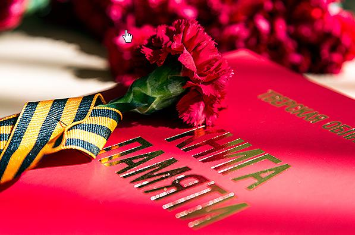

Тверская область. Книга Памяти

9 апреля 2015 года в ДК Химволокно проходила презентация книжного издания, книги под названием «Книга Памяти советских воинов Великой Отечественной войны 1941-1945 годов - уроженцев Калининской области (в границах 1939-1944 гг., 1990г.), считавшихся пропавшими без вести».
Презентация книги проходила в различных ракурсах: по форме; по структуре книги; по содержанию; по поиску материала для содержания; по издательской работе; по источникам финансирования; о людях, создававших эту книгу. Такое разнообразие в подаче книжного издания, несомненно, вызывает интерес присутствующих на презентации слушателей. Формат презентации не скучен, несмотря на серьёзную заявленную тему!
Много слов благодарности звучало в адрес коллектива, создававшего эту книгу, и это понятно и справедливо заслуженно!
Хочется несколько слов сказать от себя лично: на мой взгляд, оценить данную книгу невозможно! Книга бесценна и оценке не подлежит в силу своего уникального значения. Эта книга из разряда вечного: это книга судеб, считавшихся пропавшими без вести. Эта книга может быть использована родственниками погибших для установления судеб своих родных и близких, пропавших без вести в годы войны, для увековечения памяти павших земляков органами государственной власти, поисковыми отрядами, общественными организациями... Эта книга о людях и для людей! Книга создавалась не для своей собственной славы и собственного престижа, это книжное издание из разряда уникальных, важных жизненных дел, доведённых до логического совершенства, дел, после которых, несомненно, открыта дорога в Рай и после которых снисходит Божья Благодать! Проведя такую огромную работу, вложив неоценимый труд, можно подумать и о себе, о своём здоровье, об умиротворении своей собственной души!
Один аспект, который не был отмечен на презентации по структуре книги, и который хочется мне отметать: это лаконичность, краткость, использование при изложении материала символов Великой Отечественной войны: достаточно гвоздик (Символа Победы), журавлей (символа погибших солдат и солдаток, мирного населения), красной звезды (символа защиты), георгиевской ленточки (символа Дня Победы), веточки мимозы (символа счастья), солдатской каски со звездой и станет всё понятно без слов, о чём и о ком идёт речь.
Низкий поклон и нашу гордость всему коллективу этой уникальной книги! Спасибо за ваш неоценимый труд! Вы это заслужили!
Сурова С.А., краевед
|